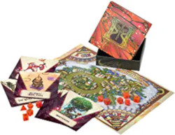
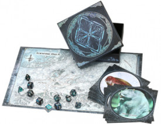
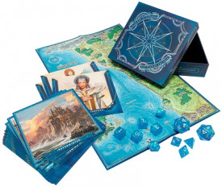
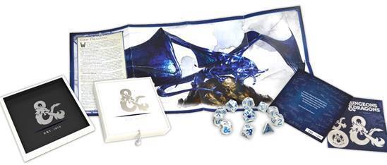
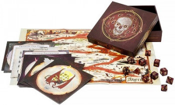
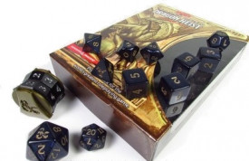
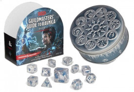
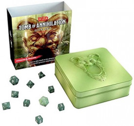

Accessoires D&D 5
Liste des différents jeux de dés commercialisés par Wizards of the Coast pour la gamme D&D 5. Notez que les prix indiqués sont ceux qui apparaissent sur leur site, mais il est possible de trouver ces articles moins chers, sur Amazon par exemple.
The Witchlight Carnival - Dice & Miscellany
- 11 dés (deux d20, un d12, deux d10, un d8, quatre d6, un d4).
- 19 cartes recto-verso illustrées détaillant des personnages, des créatures et des jeux du Witchlight Carnival.
- 1 boite feutrée qui sert comme deux pistes de dés.
- 1 carte recto-verso du Witchlight Carnival d'un côté, et une illustration de l'autre.
Sortie VO : 21 septembre 2021 (29.99 $US)
Icewind Dale: Rime of the Frostmaiden - Dice & Miscellany
- 11 dés (deux d20, un d12, deux d10, un d8, quatre d6, un d4).
- 20 cartes recto-verso illustrées détaillant des personnages et des créatures du Valbise (Snow Owlbear, etc).
- 1 boite feutrée qui sert comme deux pistes de dés.
- 1 carte recto-verso du Valbise et de Dix-Cités.
Sortie VO : 15 septembre 2020 (29.99 $US)
Forgotten Realms Laeral Silverhand's Explorer's Kit - Dice & Miscellany
- 11 dés (deux d20, un d12, deux d10, un d8, quatre d6, un d4).
- 20 cartes recto-verso illustrées détaillant des lieux, des personnages ou des histoires des Royaumes Oubliés (Baldur's Gate, Candlekeep, Icewind Dale, Neverwinter, Port Nyanzaru, Waterdeep et Dagult Neverember, Drizzt Do'Urden, Jarlaxle Baenre, Halaster Blackcloak, Laeral Silverhand, Vajra Safahr, Harpers, Zhentarim, etc)
- 1 boite feutrée qui sert comme deux pistes de dés.
- 1 carte recto-verso de la Côte des épées et de Waterdeep.
Sortie VO : 17 mars 2020 (29.99 $US)
D&D Sapphire Anniversary (45 years Limited Edition) - Dice Set
- 11 dés (deux d20, un d12, deux d10, un d8, quatre d6, un d4) en aluminium. Le 20 du d20 est un petit saphir synthétique de 1,43 carat.
- 1 boite de rangement.
- 1 piste de dés en simili cuir.
- 1 poster qui présente une image et les caractéristiques pour D&D 5 du dragon de saphir adulte (LN, FP 15), l'un des 5 dragons de gemmes.
- 5 autocollants de « l'ampersand de D&D ».
- 1 carte d’authenticité numérotée (1974 sets sont en vente, comme l'année de naissance de D&D).
Sortie VO : 12 décembre 2019 (299.99 $US !!!)
Baldur's Gate: Descent into Avernus - Dice & Miscellany
- 11 dés (deux d20, un d12, deux d10, un d8, quatre d6, un d4).
- 20 cartes recto-verso illustrées détaillant des rencontres ou des histoires concernant les diables et les démons de la Guerre de sang.
- 1 boite feutrée qui sert comme deux pistes de dés.
- 1 carte d'Avernus pour les joueurs.
- 1 illustration pour comparer la taille des diables et des démons.
Sortie VO : 17 septembre 2019 (24.95 $US)
Waterdeep: Dragon Heist - Dice
- 11 dés (deux d20, un d12, deux d10, un d8, quatre d6, un d4).
- 1 marqueur de points de vie.
Sortie VO : 20 novembre 2018 (24.95 $US)
Guildmaster's Guide to Ravnica - Dice
- 10 dés (un d20, un d12, deux d10, un d8, quatre d6, un d4).
- 1 dé de guildes.
Sortie VO : 20 novembre 2018 (24.95 $US)
Tomb of Annihilation - Dice
- 10 dés (un d20, un d12, deux d10, un d8, quatre d6, un d4).
- 1 boîte en métal.
Sortie VO : 19 septembre 2017 (19.95 $US)